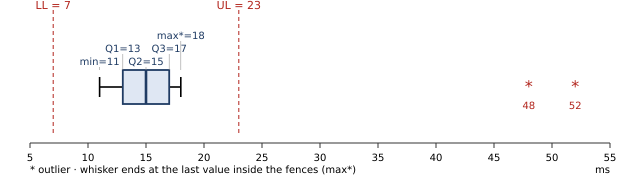

M · Practice Midterm: worked answers
1. Variable type and measurement scale
| Variabel | Jenis | Skala | Alasan |
|---|
| Merek router | Kualitatif | Nominal | labels with no order |
| Bandwidth (Mbps) | Kuantitatif kontinu | Rasio | 0 Mbps = no bandwidth |
| Latensi (ms) | Kuantitatif kontinu | Rasio | measured time, true zero |
| Jumlah perangkat terhubung | Kuantitatif diskrit | Rasio | a count |
| Kualitas sinyal (lemah/sedang/kuat) | Kualitatif | Ordinal | ordered words, unequal gaps |
| Suhu ruang server (°C) | Kuantitatif kontinu | Interval | 0°C is not "no heat" |
| Status koneksi | Kualitatif | Nominal | two labels, no order |
| Tingkat kepuasan (1–5) | Kualitatif | Ordinal | a ranking; the gap 1→2 need not equal 4→5 |
| Packet loss (%) | Kuantitatif kontinu | Rasio | 0% = no loss |
| Tahun pembuatan | Kuantitatif diskrit | Interval | year 0 is an arbitrary origin; 2024 is not "twice" 1012 |
| Nomor port (80, 443 …) | Kualitatif | Nominal | numbers used as labels; averaging them is meaningless |
| Sisa daya baterai (%) | Kuantitatif kontinu | Rasio | 0% = empty |
The three that most often lose marks: suhu °C (interval), tahun (interval), and nomor port (nominal, even though it is a number).
2. Descriptive statistics (latency, ms)
Step 0: sort (bold = Q1, median, Q3)
| Position | 1 | 2 | 3 | 4 | 5 | 6 | 7 | 8 | 9 | 10 | 11 | 12 | 13 | 14 | 15 |
|---|
| Value | 11 | 12 | 12 | 13 | 13 | 14 | 14 | 15 | 15 | 15 | 16 | 17 | 18 | 48 | 52 |
|---|
n = 15 · Σx = 285 · Σx² = 7691
Positions for n = 15: Q1 = 4th, median = 8th, Q3 = 12th.
a. Mean, median, mode
Working
x̄ = 285/15 · median = x₍₈₎ · mode = the value appearing most often (15 appears 3 times)
Answer
x̄ = 19 ms, median = 15 ms, mode = 15 ms
b. Five-number summary, IQR
Answer
Min 11, Q1 13, Median 15, Q3 17, Max 52 · IQR = 17 − 13 = 4
c. Variance and SD
Working
\(s^2=\dfrac{7691-285^2/15}{14}=\dfrac{7691-5415}{14}=\dfrac{2276}{14}\)
Answer
s² = 162.5714 ms², s = 12.7504 ms
Check
STAT → sx = 12.7504
d. CV
Working
CV = 12.7504 / 19 × 100%
Answer
CV = 67.11%, very high variability
e. Stem-and-leaf
Answer
1 | 1 2 2 3 3 4 4 5 5 5 6 7 8
2 |
3 |
4 | 8
5 | 2
Key: 1 | 1 = 11 ms
f. Boxplot, outliers
Working
LL = 13 − 1.5(4) = 7
UL = 17 + 1.5(4) = 23
48, 52 > 23. Whiskers: 11 to 18.
Answer
Outliers: 48 and 52 ms

g. Which router is more stable?
Working
Router 1: CV = 67.11%. Router 2: CV = 3/30 × 100% = 10%.
Answer
Router 2 is more stable: its CV is smaller. Comparing SDs alone is not enough when the means differ.
h. Without the outliers (n = 13)
Working
Σx = 285 − 48 − 52 = 185 → x̄ = 14.2308 · STAT on the 13 values → sx = 2.0475 · CV = 2.0475/14.2308 × 100%
Answer
x̄ = 14.23 ms, CV = 14.39%. Two spikes caused most of the variability. The median (15) hardly changes, which shows it is robust.
3. Contingency table (router brand × connection quality)
| Stabil | Kadang | Sering | Total |
|---|
| A | 45 | 10 | 5 | 60 |
|---|
| B | 30 | 20 | 10 | 60 |
|---|
| C | 15 | 10 | 15 | 40 |
|---|
| Total | 90 | 40 | 30 | 160 |
|---|
a. P(B ∩ Sering)
Answer
10/160 = 0.0625
b. P(A ∪ Sering)
Working
(60 + 30 − 5)/160 = 85/160
Answer
0.5313
c. P(C | Sering)
Working
divide by the Sering total: 15/30
Answer
0.5
d. P(Kadang | B)
Working
divide by the B total: 20/60
Answer
0.3333
e. P(A | Stabil)
Working
45/90
Answer
0.5
f. Independent?
Working
P(Stabil | A) = 45/60 = 0.75, but P(Stabil) = 90/160 = 0.5625.
Equivalently P(A ∩ Stabil) = 45/160 = 0.2813 ≠ P(A)P(Stabil) = 0.375 × 0.5625 = 0.2109.
Answer
Not independent. Brand A routers are stable more often than routers overall.
g. Most likely brand of a router that often drops
Working
P(A | Sering) = 5/30 = 0.1667 · P(B | Sering) = 10/30 = 0.3333 · P(C | Sering) = 15/30 = 0.5
Answer
Brand C (0.5). This is Bayes' rule read straight from the table.
4. Binomial: X ~ B(15, 0.1)
X = banyaknya chip cacat. P(0) = 0.9¹⁵ = 0.2059, P(1) = 0.3432, P(2) = 0.2669, P(3) = 0.1285, P(4) = 0.0428
a. P(X = 2)
Working
\(\binom{15}{2}(0.1)^2(0.9)^{13}=105(0.01)(0.2542)\)
Answer
0.2669
b. P(X ≤ 1)
Working
0.2059 + 0.3432
Answer
0.5490
c. P(X ≥ 3)
Working
1 − CD(2) = 1 − 0.8159 (CD(2) = 0.2059 + 0.3432 + 0.2669, unrounded 0.81594)
Answer
0.1841
d. P(1 ≤ X ≤ 3)
Working
0.3432 + 0.2669 + 0.1285 = CD(3) − CD(0)
Answer
0.7386
e. P(X ≥ 1)
Working
1 − 0.9¹⁵
Answer
0.7941
f. Mean and SD
Working
μ = 15(0.1) · σ = √(15 · 0.1 · 0.9) = √1.35
Answer
μ = 1.5, σ = 1.1619
5. Poisson: 6 requests per minute
X = request per menit, X ~ Poisson(6). e⁻⁶ = 0.0024788. P(0) = 0.0025, P(1) = 0.0149, P(2) = 0.0446, P(3) = 0.0892, P(4) = 0.1339
a. P(X = 4)
Working
\(\dfrac{e^{-6}6^4}{4!}=\dfrac{0.0024788\times1296}{24}\)
Answer
0.1339
b. P(X ≤ 2)
Working
\(e^{-6}(1+6+18)=25e^{-6}\)
Answer
0.0620
c. P(X ≥ 2)
Working
1 − P(0) − P(1) = 1 − 7e⁻⁶
Answer
0.9826
d. No request in 20 seconds
Method
Rescale: 20 s = 1/3 minute → λ = 6 × 1/3 = 2
Answer
e⁻² = 0.1353
e. At least 1 in 30 seconds
Method
λ = 6 × 0.5 = 3; P(Y ≥ 1) = 1 − e⁻³
Answer
0.9502
f. Mean and SD per minute
Working
For a Poisson, mean = variance = λ
Answer
μ = 6, σ = √6 = 2.4495
6. Normal: X ~ N(120, 64), σ = √64 = 8
a. P(X < 110)
Working
z = (110 − 120)/8 = −1.25 → Φ(−1.25)
Answer
0.1056
b. P(114 < X < 130)
Working
z = −0.75 and 1.25 → 0.8944 − 0.2266
Answer
0.6678
c. P(X > 136)
Working
z = 16/8 = 2.00 → 1 − 0.9772
Answer
0.0228
d. Minimum life to be in the best 5%
Method
Best 5% = right tail 0.05 → left area 0.95 → z = 1.645
Working
x = 120 + 1.645(8)
Answer
133.16 minutes (Inverse Normal 0.95 → 133.159)
e. Time by which 90% have run out
Method
"90% sudah habis pada waktu tersebut atau lebih cepat" = left area 0.90 → z = 1.28
Working
x = 120 + 1.28(8)
Answer
130.24 minutes (Inverse Normal → 130.25)
7. (Bonus) Continuous pdf: f(x) = k(4 − x) on [0, 4]
a. Find k and prove f is a pdf
Working
\(\int_0^4 k(4-x)\,dx=k\left[4x-\tfrac{x^2}{2}\right]_0^4=k(16-8)=8k=1\Rightarrow k=\tfrac18\).
For 0 ≤ x ≤ 4, 4 − x ≥ 0, so f(x) ≥ 0. Elsewhere f = 0. Both conditions hold ∴ f is a pdf.
Answer
k = 1/8 = 0.125
b. Probabilities
Working
Use \(F(x)=\tfrac18\left(4x-\tfrac{x^2}{2}\right)\): F(1) = 3.5/8 = 0.4375 · F(3) = 7.5/8 = 0.9375 · F(2) = 6/8 = 0.75
Answer
P(X ≤ 1) = 0.4375 · P(1 < X < 3) = 0.5 · P(X > 2) = 0.25
c. cdf
Answer
\(F(x)=\begin{cases}0 & x<0\\ \frac{8x-x^2}{16} & 0\le x\le 4\\ 1 & x>4\end{cases}\) · Check: F(0) = 0 and F(4) = 1 ✓
d. μ and σ²
Working
\(\mu=\tfrac18\int_0^4(4x-x^2)dx=\tfrac18\left(32-\tfrac{64}{3}\right)=\tfrac43\) · \(\E(X^2)=\tfrac18\int_0^4(4x^2-x^3)dx=\tfrac18\left(\tfrac{256}{3}-64\right)=\tfrac83\)
σ² = 8/3 − (4/3)² = 8/9
Answer
μ = 1.3333 s, σ² = 0.8889 s²
e. Median
Working
F(m) = 0.5 → 8m − m² = 8 → m² − 8m + 8 = 0 → m = 4 ± √8. Only 4 − √8 lies in [0, 4].
Answer
m = 1.1716 s (median < mean: the density decreases, so the distribution is skewed right)
8. (Bonus) Exponential: mean 200 h → λ = 1/200
a–c
Working
P(X < 100) = 1 − e^(−100/200) · P(X > 300) = e^(−1.5) · P(150 < X < 250) = e^(−0.75) − e^(−1.25)
Answer
0.3935 · 0.2231 · 0.1859
d. P(X > 500 | X > 200)
Method
Memoryless: only the extra 300 hours count.
Answer
e^(−300/200) = 0.2231, the same as (b)
e–f. Median and 90th percentile
Working
Solve 1 − e^(−x/200) = p → x = −200 ln(1 − p). p = 0.5 → 200 ln 2. p = 0.9 → −200 ln 0.1.
Answer
median = 138.63 h · 90% by 460.52 h
Mark yourself
| Lost marks on Q1 | Re-read the scale decision steps ({{p:s1-scale}}) and the traps on °C, years and port numbers. |
| Lost marks on Q2 | Did you sort first? Did you use sx? Did you stop the whiskers at the last value inside the fences? |
| Lost marks on Q4–Q6 | Check Tab X: 1 − CD(k − 1) for "at least", rescaling λ, σ = √variance, left area for "or faster". |